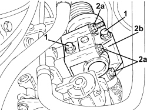
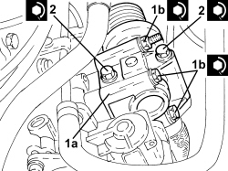
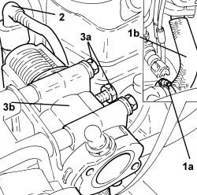

1080C24 E.G.R. SYSTEM SOLENOID - R + R
- Path
- Procedures > 10 ENGINE > 1080 EMISSION CONTROL SYSTEM > 1080C EXHAUST GAS RECIRCULATION SYSTEM (E.G.R.) > 1080C24 E.G.R. SYSTEM SOLENOID - R + R
- Kind
- repair procedure (removal / refitting; the operation number is the code)
- Applies to
- engines: 1.9 JTD 8v, 1.9 JTD 16v, 2.4 JTD 20v; all production periods
- Interactive page
- https://sloeber94.github.io/elrnDB-fCrm/en/#/194000378
Applies to: engines: 1.9 JTD 16v, 2.4 JTD 20v; all production periods
 Removing
Removing
 Refitting
RefittingOp. 1016A10 SOUND-PROOFING COVER - R.R
1. Disconnect the electrical connection from the EGR system solenoid valve
Description | Connector | |
|---|---|---|
1 | EGR solenoid valve |

Applies to: engines: 1.9 JTD 16v, 2.4 JTD 20v; all production periods
1. Undo the bolts fixing the exhaust gas outlet from the water/exhaust gas heat exchanger for the E.G.R. system, E.G.R. system solenoid valve side.
2. Undo the fixing bolts (2a) and remove the E.G.R. system solenoid valve (2b).
- Remove the gasket.

Applies to: engines: 1.9 JTD 16v, 2.4 JTD 20v; all production periods
Refitting
Removing- Place the gasket back in its housing.
1. Place the E.G.R. system solenoid valve (1a) in its housing and fasten it tightening the bolts (1b) to the recommended torque.
Component | Fastening | dia | Value (daNm) | Validity |
|---|---|---|---|---|
E.G.R. system solenoid valve | Bolt | M6 | (chamber side) 2.5 | 1.9 JTD 16v 2.4 JTD 20v |
2. Tighten the bolts fixing the exhaust gas outlet from the water/exhaust gas heat exchanger for the E.G.R. system, E.G.R. system solenoid valve side to the recommended torque.
Component | Fastening | dia | Value (daNm) | Validity |
|---|---|---|---|---|
Exhaust gas/water heat exchanger for E.G.R. system | Bolt | M8 | (EGR solenoid side) 2.3 - 2.8 | 1.9 JTD 16v 1.9 JTD 8v 2.4 JTD 20v |

Applies to: engines: 1.9 JTD 16v, 2.4 JTD 20v; all production periods
- Connect the electrical connection to the EGR system solenoid valve
Applies to: engines: 1.9 JTD 8v; all production periods
Removing
RefittingOp. 5530B52 BATTERY SUPPORT/DRIP TRAY - R.R
Op. 1048B27 RIGID PIPE FOR AIR INLET TO THROTTLE BODY - R R
Op. 1060G50 THROTTLE BODY - R.R
1. Loosen the collar (1a) and disconnect the exhaust gas outlet hose from the exhaust gas/water heat exchanger for the E.G.R. system (1b), heat exchanger side.
2. Disconnect the electrical connection from the EGR system solenoid valve
Description | Connector | |
|---|---|---|
2 | EGR solenoid valve |
3. Undo the fixing bolts (3a) and remove the E.G.R. system solenoid valve (3b) complete with hose.
- Remove the gasket.

Applies to: engines: 1.9 JTD 8v; all production periods
Refitting
Removing- Place the gasket back in its housing.
- Place the E.G.R. system solenoid valve in its housing complete with hose and fasten it tightening the bolts to the recommended torque.
Component | Fastening | dia | Value (daNm) | Validity |
|---|---|---|---|---|
E.G.R. system solenoid valve | Bolt | M8 | (intake manifold side) 2.3 - 2.8 | 1.9 JTD 8v |
- Connect the electrical connection for the E.G.R. solenoid valve.
- Connect the exhaust gas outlet hose from the exhaust gas/water heat exchanger for the E.G.R. system, heat exchanger side and tighten the collar.
Op. 1060G50 THROTTLE BODY - R.R
Op. 1048B27 RIGID PIPE FOR AIR INLET TO THROTTLE BODY - R R
Topics linked from this page (6)
- 1016A10 SOUND-PROOFING COVER - R.R
- 1048B27 RIGID PIPE FOR AIR INLET TO THROTTLE BODY - R R
- 1060G50 THROTTLE BODY - R.R
- 5530B10 BATTERY - R+R
- 5530B52 BATTERY SUPPORT/DRIP TRAY - R.R
- L030 EGR SOLENOID VALVE
Topics that link to this page (13)
- D004 ENGINE NOT RUNNING SMOOTHLY
- D005 ENGINE DOES NOT PRODUCE BEST PERFORMANCE
- D010 ENGINE IDLE IRREGULAR
- D012 ENGINE IDLING TOO LOW
- 1060GL CHECK OPERATION OF MAIN ENGINE CONTROL UNIT RELAY
- 1080CB EGR SOLENOID OPERATION CHECK
- 1060F10 FUEL INJECTORS - R.R.
- 1060F20 PIPE FROM PRESSURE PUMP TO FUEL MANIFOLD - R.R.
- 1060F30 SINGLE FUEL MANIFOLD PIPE - R.R.
- 1060F36 PIPES (ALL) FROM FUEL MANIFOLD TO INJECTOR - R.R.
- 1060F51 FUEL HOSE FROM SINGLE MANIFOLD INJECTOR TO RETURN MANIFOLD - R.R.
- 1060G31 FUEL PRESSURE REGULATOR ON SINGLE MANIFOLD TO INJECTORS - R R
- 1072B10 INLET MANIFOLD - R + R AND REPLACE SEAL